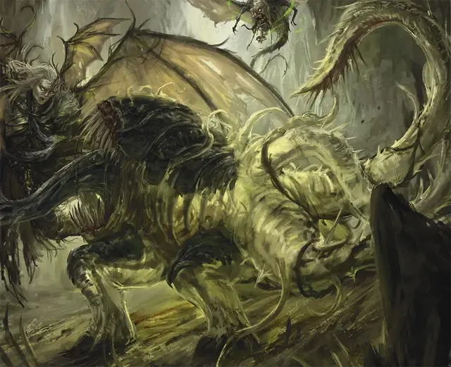

Мутирующий отидж
Otyugh Mutate
Большая Аберрация, нейтральная

Класс Доспеха 16 (природный доспех)
Хиты 68 (8к8 + 32)
Скорость 30 футов
| мод | спас | ||
|---|---|---|---|
| СИЛ | 19 | +4 | +7 |
| ЛОВ | 11 | +0 | +0 |
| ТЕЛ | 18 | +4 | +7 |
| мод | спас | ||
|---|---|---|---|
| ИНТ | 10 | +0 | +0 |
| МДР | 15 | +2 | +2 |
| ХАР | 6 | −2 | −2 |
Иммунитет к урону яд
Иммунитет к состояниям отравление
Чувства тёмное зрение 120 футов, пассивное Восприятие 12
Языки Отиджский, Телепатия 120 фт.
Опасность 6 (2300 опыта)
Бонус мастерства +3
Особенности
Ядовитое дыхание. Из его рта вырывается ядовитый газ, образовавшийся в результате переваривания мутантом предыдущей еды. В начале хода мутанта каждое существо в пределах 5 футов от него должно преуспеть в спасброске Телосложения Сл 15, иначе оно получит 3 (1к6) урона ядом.
Действия
Мультиатака. Мутирующий совершает две атаки Укусом или Щупальцем. Он может заменить одну из этих атак на Удар хитином.
Укус. Рукопашная атака оружием: +7 к попаданию, досягаемость 5 футов, одна цель. Попадание: 13 (2к8 + 4) колющего урона. Если цель — существо, она должна преуспеть в спасброске Телосложения Сл 15, иначе она будет отравлена. Каждые 24 часа цель должна повторять спасбросок, уменьшая максимум своих хитов на 5 (1к10) в случае провала. В случае успеха цель больше не отравлена. Цель умирает, если максимум ее хитов снижается до 0. Это снижение максимума хитов цели длится до тех пор, пока она не перестанет находиться в состоянии отравления.
Щупальце. Рукопашная атака оружием: +7 к попаданию, досягаемость 10 футов, одна цель. Попадание: 13 (2к8 + 4) дробящего урона, и если цель — существо Среднего размера или меньше, она будет схвачена (Сл высвобождения 15) и опутана до тех пор, пока захват не закончится. У мутирующего есть два щупальца, каждое из которых может схватить одну цель.
Удар о хитин. Мутирующий нацеливается на одно существо, которое он схватил, ударяя существо о его хитиновые пластины. Существо должно преуспеть в спасброске Телосложения Сл 15, иначе оно получит 16 (3к10) дробящего урона и становится ошеломлённой до конца следующего хода мутирующего.
Описание
Существо, подвергшееся воздействию странной энергии Дальнего Предела, рискует развитием мутаций. Такое существо претерпевает метаморфозу, поскольку силы Дальнего Предела переписывают основы существования существа.
Любое существо может мутировать и трансформироваться, проявляя физические характеристики, связанные с Дальним Пределом. Некоторые существа мутируют после длительного воздействия энергии или магии Дальнего Предела, исходящей из этого странного плана. Другие намеренно меняют себя, стремясь принять ужасные силы, которым они поклоняются. Существа, которые становятся мутантами, часто необъяснимым образом возвращаются к своим предыдущим формам, как только влияние Дальнего Предела ослабевает.
Попытки принудительного преобразования существ по необъяснимым причинам терпят неудачу, хотя силы зла, такие как древняя империя свежевателей разума, провели много исследований по этой теме. На протяжении веков свежеватели разума пытались создать армии мутантов, которые пронеслись бы по Подземью. Однако их усилия всегда оказывались бесплодными, и в конце концов свежеватели разума отказались от своих планов.
Мутанты часто приобретают псионические способности, отращивают крылья, покрываются потусторонней слизью или проявляют другие тревожные черты.
Мутриующий отидж
Поднявшись из груд падали и грязи, подвергшихся воздействию энергии Дальнего Предела, мутировавший отидж отращивает на своих конечностях хитиновые угольно-черные пластины. Пластины резко контрастируют с полупрозрачным, почти призрачным видом его плоти, что обеспечивает гротескный вид в ядовитые отходы, которыми недавно питался отидж.